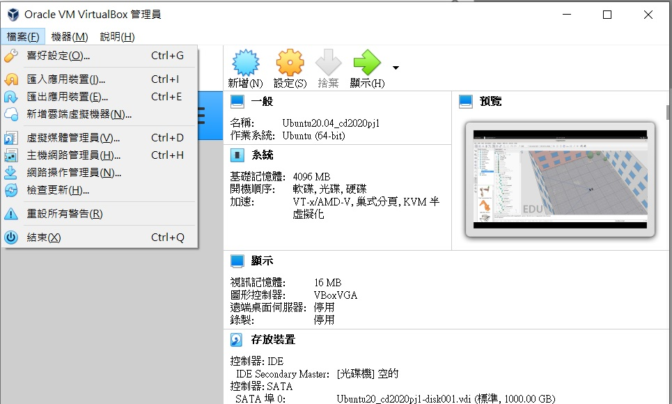

Week6-Week9 <<
Previous Next >> Week15-Week18
Week10-Week14
topic 2 PDF MSModelingAndTFApproaches.pdf.
翻譯PDF
分組名單
| 翻譯MSModelingAndTFApproaches: |
|
| 40723232 |
1-20 |
| 40723234 |
21-50 |
| 40723204 |
51-80 |
| 40723225 |
81-110 |
| 40623115 |
111-140 |
| 40723245 |
171-207 |
| 翻譯MSModelingAndTFApproaches: |
40723238、40723210 |
| 翻譯MechEducFutureNeed: |
40723250、40723210 |
| 翻譯MechaFutureAndChallenges: |
40723212 |
| Mechatronic project |
40723210 |
直播影片：https://www.youtube.com/watch?v=GmKxlNPx-gs&feature=youtu.be
ssh to github
-
將SSH密鑰複製到剪貼板。
如果您的SSH密鑰文件的名稱與示例代碼的名稱不同，請修改文件名以匹配當前設置。複製密鑰時，請勿添加任何換行符或空格。
$ clip < ~/.ssh/id_rsa.pub
# Copies the contents of the id_rsa.pub file to your clipboard
提示：如果clip不起作用，則可以找到隱藏的.ssh文件夾，在您喜歡的文本編輯器中打開文件，然後將其複製到剪貼板。
-
在任何頁面的右上角，點擊您的個人資料照片，然後點擊設置。
-
在用戶設置邊欄中，點擊SSH和GPG密鑰。
-
單擊“ 新建SSH密鑰”或“ 添加SSH密鑰”。
-
在“標題”字段中，為新密鑰添加一個描述性標籤。例如，如果您使用的是個人Mac，則可以將此鍵稱為“個人MacBook Air”。
-
將您的密鑰粘貼到“密鑰”字段中。
-
單擊添加SSH密鑰。
-
如果出現提示，請確認您的GitHub Enterprise密碼。
Vrep虛擬主機連線
下載Ubuntu和VirtualBox
開啟VirtualBox>點擊檔案>匯入應用程式>點選剛剛下載的Ubuntu檔案
回到VirtualBox>點擊檔案>喜好設定>網路>新增Net網路>確定
回到VirtualBox>點擊已匯入的Ubuntu檔>設定>網路>附加到改為僅限主機介面卡>確定
回到VirtualBox>點擊已匯入的Ubuntu檔>啟動

輸入密碼kmol2020>案左上角Activities>Show App>LXTerminal
輸入cd coppeliasim4_rev4/CoppeliaSim_Edu_V4_0_0_Ubuntu18_04
輸入 ./coppeliaSim.sh 即可開啟Vrep完成連線
Remote API 連線
下載控制程式和Xming
開啟VirtualBox>點擊Ubuntu>設定>網路>附加到改為NAT>進階>連接埠傳送
新增三個連接埠>設定IP>確定
回到VirtualBox>點擊Ubuntu>啟動
輸入密碼kmol2020>點擊左上角Activities>Show App>Settings
Power>Blank screen>Never
Automatic Suspend>將兩個選項都關閉，關閉螢幕與電腦自動休眠
方法一
開啟Putty>Host name輸入localhost，Saved Sessions輸入localhost按下Save
SSH>X11>X display location>localhost:0.0>將Enable X11 forwarding打勾>按下OPEN
輸入帳號kmol2020>密碼kmol2020>輸入
打開XLaunch>都按下一步
回到Putty>輸入Xterm&
輸入cd coppeliasim4_rev4/CoppeliaSim_Edu_V4_0_0_Ubuntu18_04
輸入 ./coppeliaSim.sh 開啟Vrep>使用SciET開啟控制程式car_model.py
回到Vrep>File>open recent scent>sdc.ttt開啟四輪車模擬圖
點擊右上角開始按鈕
開啟car_model.py中案F5(tool>GO)
方法二
輸入密碼kmol2020>案左上角Activities>Show App>LXTerminal
輸入cd coppeliasim4_rev4/CoppeliaSim_Edu_V4_0_0_Ubuntu18_04
輸入 ./coppeliaSim.sh 開啟Vrep>open recent scent>sdc.ttt開啟四輪車模擬圖
點擊右上角開始按鈕
開啟car_model.py中案F5(tool>GO)
IPV4 Ubuntu 對外連線
新增整體系統阜號，主機網路為NAT Network。
按下啟動，密碼 kmol2020，開啟 LXTermmial。
輸入ifconfig -> sudo apt install net-tools，密碼 kmol2020。
輸入ping 127.0.0.1測試，然後進入cd2020pj1->git pull。
輸入sudo vi wsgi.py編輯內容，按 i 編輯，近端的host 改為10.0.2.4。
按下esc後，輸入"wq" 儲存，開啟cd2020pj1.leo，在nav中搜尋"allowExt"。
新增 ttt檔，然後在tmp下sudo vi oauth_scrum.txt中輸入內容
輸入python3 wsgi.py 去啟動遠端。
前往網站https:/127.0.0.0.1.1.8443/alogin。
---------------------------------------------------------
FlieZilla虛擬主機共享
下載FlieZilla
開啟Ubuntu>檔案>喜好設定>網路>NatNatwork>編輯>連接埠轉送>設定埠號>案下確定
開啟Putty>Host name輸入::1，Saved Sessions輸入::1
SSH>X11>X display location>localhost:0.0>將Enable X11 forwarding打勾>按下OPEN
輸入帳號kmol2020>密碼kmol2020>輸入
開啟FlieZilla>檔案>站台管理員>新增站台>主機名稱為改::1>協定改為SFTP
主機輸入 [::1]>連接埠輸入22>按下連接>輸入密碼kmol2020完成共享
Week6-Week9 <<
Previous Next >> Week15-Week18